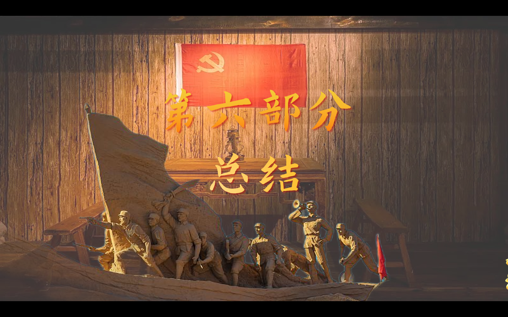
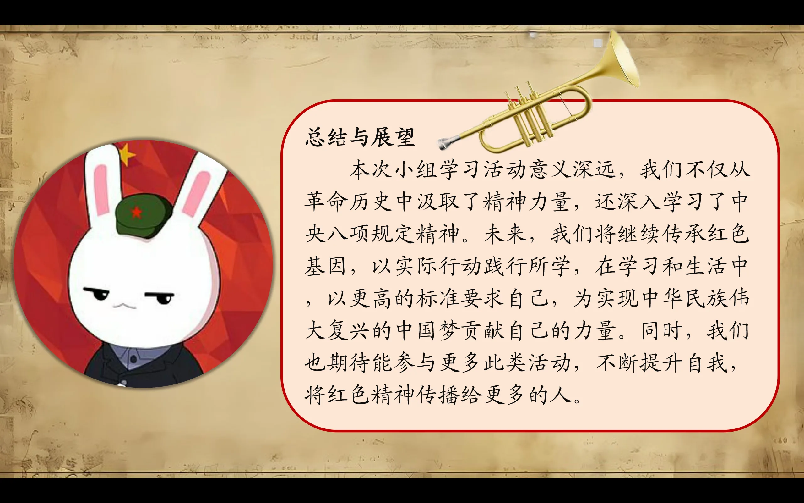
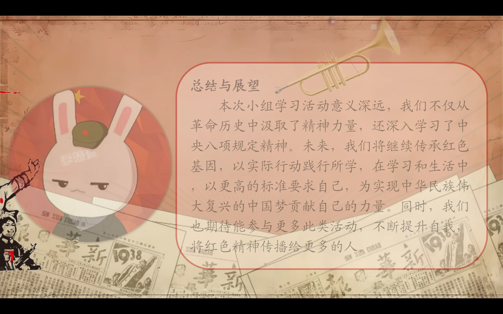
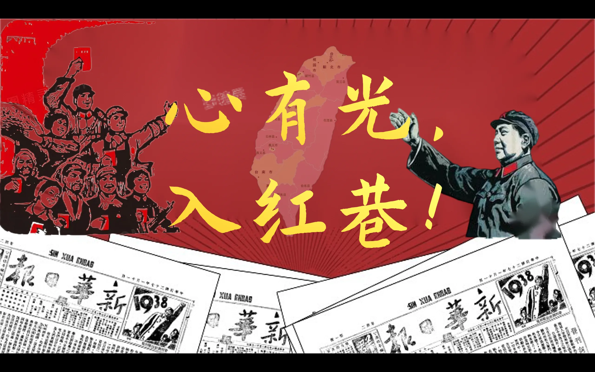
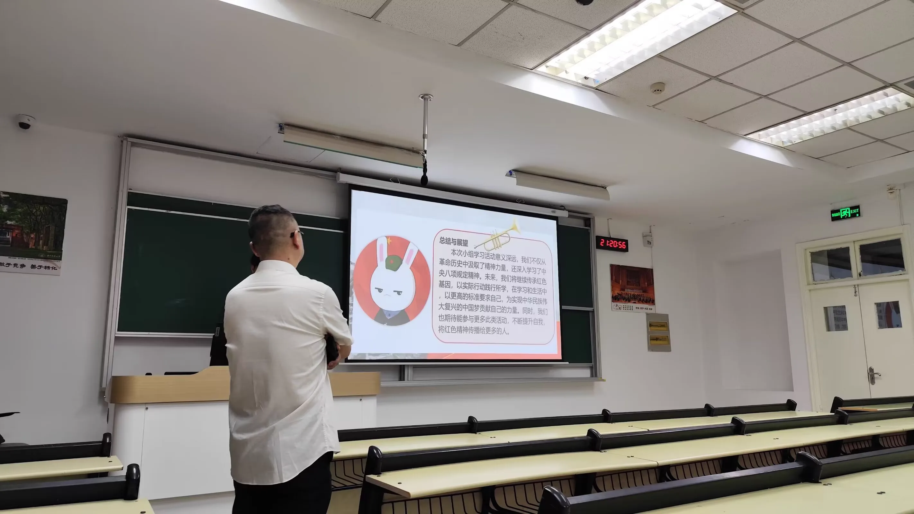

Journal · 2025-05-06
湖北省武汉市
2025年5月6日 22:47
我个人感觉，WPS的演示模板质量参差不齐，少有惊艳。在华中地区，本科生的小组作业滥用模板，千篇一律，严重“同质化”。教学楼的白板上，“劣质党政风”大行其道；奇丑无比的演示图文，不在少数。
笔者在党宣部，手搓了很多宣传资料，感慨良多。其实呢，PPT可以理解为，用于现场展示的漫画类的图文。观众真正想看的，是学者在台上的演讲。
需要强调的是，“PPT”是有中文名的，它叫“演示图文”或“演示”。黄州府的师长，有时也称其“课件”。
演示图文，切忌“花里胡哨”“炫技”！因为新时代的大学生，早就“审美疲劳”啦。况且评委老师和大厂领导们，也不待见“劣质党建风”，“炫酷科技风”就别提啦。
笔者常用的演示字体，就三样：演示秋鸿体，方正宋简体，草檀斋毛泽东字体。其中，“草檀斋毛泽东字体”特别潇洒！
至于演示中的图片，不消搞得太麻烦，直接去“视觉中国”网站上白嫖！版权法在很多时候，就是个屁！
值得一提的是，牛皮纸背景，观感还是挺舒服的。杨凯老师的“那兔”头像，总能给人一种气定神闲的感觉。
如果大家想要匠心独运，可以考虑在演示图文中，加几张好玩的漫画。能在TED演讲的大佬，都擅长展示漫画！
如果偏要在演示中搞“特效”，单用“平滑切换”，就很惊艳啦！
我现在发现，我似乎天生就干不惯那些花里胡哨的“形式主义”“面子工程”，我还是喜欢输入内容、整理文本、输出想法，这才是有意思的！






May 6, 2025 22:47
Personally I feel that the quality of WPS presentation templates is uneven and rarely stunning. In central China, undergraduates abuse templates in their group assignments, all alike and severely "homogenized." On the whiteboards of teaching buildings, the "cheap party-and-government style" runs rampant, and there are quite a few hideous presentation graphics.
I, the author, have cobbled together many propaganda materials in the Party Propaganda Department, and it gave me much to reflect on. In fact, a PPT can be understood as cartoon-like graphics for live presentation. What the audience really wants to see is the speaker's lecture on stage.
It must be emphasized that "PPT" has a Chinese name: it is called "presentation graphics" or simply "presentation." The teachers of Huangzhou Prefecture sometimes call it "courseware."
In presentation graphics, avoid being "flashy" and "showy"! Because university students of the new era have long been "aesthetically fatigued." Besides, the judging teachers and big-company leaders also dislike the "cheap party-building style," not to mention the "cool tech style."
The presentation fonts I usually use are just three: Yanshi Qiuhong, Fangzheng Song Simplified, and the Caotan Zhai Mao Zedong font. Among them, the "Caotan Zhai Mao Zedong font" is especially elegant and dashing!
As for the images in your presentation, don't bother with too much trouble — just freeload from the "Visual China" website! In many cases, copyright law is just bullshit!
It's worth mentioning that a kraft-paper background is quite pleasing to the eye. Teacher Yang Kai's "Na Tu" avatar always gives one a sense of calm composure.
If you want to show real ingenuity, consider adding a few fun cartoons to your presentation graphics. The big shots who can speak at TED are all good at showing cartoons!
If you insist on adding "effects" to your presentation, just using "smooth transitions" alone is already stunning!
I now realize that I seem to be born unable to get used to all that flashy "formalism" and "face-saving projects." I still prefer inputting content, organizing text, and outputting ideas — now that's what's interesting!
6 mai 2025 22:47
J'ai le sentiment que la qualité des modèles de présentation WPS est inégale et rarement époustouflante. Dans le centre de la Chine, les étudiants de licence abusent des modèles dans leurs travaux de groupe, tous identiques et gravement « homogénéisés ». Sur les tableaux blancs des bâtiments d'enseignement, le « style bas de gamme parti-gouvernement » fait rage, et les présentations d'une laideur extrême ne manquent pas.
À la Section de propagande du Parti, j'ai bricolé de nombreux supports de propagande, ce qui m'a beaucoup fait réfléchir. En réalité, un PPT peut se comprendre comme des images de type bande dessinée destinées à la présentation en direct. Ce que le public veut vraiment voir, c'est l'exposé du conférencier sur scène.
Il faut souligner que « PPT » a un nom chinois : on l'appelle « images de présentation » ou simplement « présentation ». Les enseignants de la préfecture de Huangzhou l'appellent parfois « support de cours ».
Dans les images de présentation, évitez le « tape-à-l'œil » et la « démonstration d'effets » ! Car les étudiants de la nouvelle ère sont depuis longtemps « fatigués de l'esthétique ». En outre, les professeurs jurys et les dirigeants des grandes entreprises n'apprécient pas non plus le « style de construction du Parti bas de gamme », sans parler du « style technologique branché ».
Les polices de présentation que j'utilise couramment sont au nombre de trois : Yanshi Qiuhong, Fangzheng Song simplifié et la police Caotan Zhai Mao Zedong. Parmi elles, la « police Caotan Zhai Mao Zedong » est particulièrement élégante !
Quant aux images de la présentation, ne vous compliquez pas la vie, allez simplement les « piquer » gratuitement sur le site « Visual China » ! Bien souvent, le droit d'auteur n'est qu'une vaste blague !
Il convient de noter qu'un fond en papier kraft est plutôt agréable à regarder. L'avatar « Na Tu » du professeur Yang Kai donne toujours une impression de calme et de sérénité.
Si vous voulez faire preuve d'ingéniosité, pensez à ajouter quelques bandes dessinées amusantes à vos images de présentation. Les grands orateurs de TED excellent tous dans l'art de présenter des dessins !
S'il faut absolument ajouter des « effets » à votre présentation, l'utilisation seule des « transitions fluides » suffit déjà à éblouir !
Je m'aperçois à présent que je semble incapable par nature de m'habituer à ce « formalisme » et à ces « projets de façade » tape-à-l'œil. Je préfère encore saisir du contenu, organiser du texte et produire des idées — voilà ce qui est intéressant !
06.05.2025 22:47
Ich habe das Gefühl, dass die Qualität der WPS-Präsentationsvorlagen ungleichmäßig und selten umwerfend ist. In Zentralchina missbrauchen Bachelor-Studenten in ihren Gruppenarbeiten Vorlagen, alles gleichförmig und stark "homogenisiert". Auf den Whiteboards der Lehrgebäude grassiert der "billige Partei-Regierungs-Stil", und es gibt nicht wenige scheußliche Präsentationsgrafiken.
In der Partei-Propagandaabteilung habe ich viele Propagandamaterialien selbst gebastelt und dabei viel nachgedacht. Eigentlich lässt sich eine PPT als comicartige Grafik für die Live-Präsentation verstehen. Was das Publikum wirklich sehen will, ist der Vortrag des Referenten auf der Bühne.
Hervorzuheben ist, dass "PPT" einen chinesischen Namen hat: Man nennt es "Präsentationsgrafik" oder einfach "Präsentation". Die Lehrer der Präfektur Huangzhou nennen es manchmal auch "Kursmaterial".
Bei Präsentationsgrafiken sollte man "Buntheit" und "Effekthascherei" vermeiden! Denn die Studenten der neuen Ära sind längst "ästhetisch ermüdet". Außerdem mögen auch die Jury-Lehrer und die Führungskräfte großer Unternehmen den "billigen Parteiaufbau-Stil" nicht, vom "coolen Tech-Stil" ganz zu schweigen.
Die Präsentationsschriften, die ich üblicherweise verwende, sind nur drei: Yanshi Qiuhong, Fangzheng Song (vereinfacht) und die Caotan-Zhai-Mao-Zedong-Schrift. Davon ist die "Caotan-Zhai-Mao-Zedong-Schrift" besonders elegant und schwungvoll!
Was die Bilder in der Präsentation betrifft, mach dir keine Umstände — bedien dich einfach kostenlos auf der Website "Visual China"! Das Urheberrecht ist in vielen Fällen schlicht Quatsch!
Erwähnenswert ist, dass ein Kraftpapier-Hintergrund recht angenehm wirkt. Das "Na Tu"-Profilbild von Lehrer Yang Kai vermittelt stets ein Gefühl von Gelassenheit und Ruhe.
Wenn ihr echten Einfallsreichtum zeigen wollt, könnt ihr erwägen, ein paar lustige Comics in eure Präsentationsgrafiken einzufügen. Die Größen, die bei TED sprechen können, verstehen sich alle darauf, Comics zu präsentieren!
Wenn man unbedingt "Effekte" in die Präsentation einbauen will, genügt allein die Verwendung von "weichen Übergängen", um zu beeindrucken!
Ich stelle jetzt fest, dass ich von Natur aus nicht mit dem bunten "Formalismus" und den "Image-Projekten" zurechtkomme. Ich bevorzuge weiterhin, Inhalte einzugeben, Texte zu ordnen und Gedanken auszugeben — das ist erst interessant!